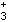
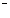

A.丙氨酸
B.赖氨酸
C.丝氨酸
D.谷氨酸
E.苯丙氨酸
参考答案：D
题目解析：常见的酸性氨基酸：天冬氨酸、谷氨酸。常见的碱性氨基酸：赖氨酸、精氨酸、组氨酸。含硫氨基酸为蛋氨酸，亚氨基酸为脯氨酸。
A.亚基聚合
B.α-螺旋
C.β-折叠
D.氨基酸序列
E.氨基酸含量
题目解析：蛋白质一级结构是指多肽链中氨基酸残基的排列顺序，也是蛋白质最基本的结构，由基因上遗传密码的排列顺序所决定，D正确，E不正确。蛋白质的四级结构主要描述蛋白质亚基的空间排列以及亚基之间的连接和相互作用，不涉及亚基内部结构，A不正确。蛋白质二级结构是多肽链局部的空间结构（构象），主要有α-螺旋、β-折叠、β-转角等几种形式，它们是构成蛋白质高级结构的基本要素。B和C不正确。
A.所含氨基酸的数量
B.表观消化率
C.含量
D.真消化率
E.所含必需氨基酸的含量和比值
参考答案：E
题目解析：蛋白质的氨基酸评分（蛋白质化学评分），用于反映蛋白质构成和利用率的关系，即所含必需氨基酸的含量和比值主要决定了蛋白质生物学价值的高低，E正确。其他选项皆错，故选E。
A.二硫键
B.一级结构
C.二级结构
D.三级结构
E.四级结构
题目解析：蛋白质的四级结构主要描述蛋白质亚基的空间排列以及亚基之间的连接和相互作用，不涉及亚基内部结构。蛋白质亚基之间形成的四级结构主要通过疏水作用、氢键、范德华力等，其中最主要的是疏水作用。因而亚基解聚时破坏了蛋白质的四级结构，E正确。其他选项皆错，故选E。
A.缬氨酸
C.甘氨酸
D.酪氨酸
E.丝氨酸
参考答案：C
题目解析：氨基酸是组成蛋白质的基本单位，存在于自然界的氨基酸有300多种，但组成人体蛋白质的仅有20种氨基酸，都是L-α-氨基酸（除甘氨酸外）。
A.苯丙氨酸
B.羟酪氨酸
C.赖氨酸
D.脯氨酸
E.异亮氨酸
参考答案：A
题目解析：含有芳香环的氨基酸被分类为芳香族氨基酸，代表物质酪氨酸、苯丙氨酸、色氨酸、氨基酸是既含氨基（-NH）又含羧基（-COOH）的有机化合物。
A.不带负电荷
B.在电场中不泳动
C.带正电荷
D.不带正电荷
E.不带正负电荷
参考答案：B
题目解析：氨基酸在等电点时，在电场中不泳动。氨基酸是一种两性电解质，其解离方式取决于所处溶液的pH。若溶液pH<PI，解离成阳离子；若溶液pH>PI，解离成阴离子；若溶液pH=PI，成为兼性离子，呈电中性，在电场中不泳动。所有氨基酸都含有碱性的α-氨基和酸性的α-羧基，可在酸性溶液中与H结合成带正电荷的阳离子（-NH），也可在碱性溶液中与OH 结合成带负电荷的阴离子（-COO-）。
A.脯氨酸
B.天冬酰胺
C.羟脯氨酸
D.异亮氨酸
E.谷氨酸
题目解析：合成蛋白质时，脯氨酸可羟化修饰为羟脯氨酸。
A.在α-碳原子上都结合有氨基或亚氨基
B.所有的α-碳原子都是不对称碳原子
C.组成人体的氨基酸都是L型
D.赖氨酸是唯一的一种亚氨基酸
E.以上均正确
题目解析：蛋白质彻底水解后，用化学分析方法证明其基本组成单位是α-氨基酸。
A.元素组成主要有碳、氢、氧、氮、硫
B.P元素的含量较多且固定
C.生物体内只有蛋白质才含有氨基酸
D.组成蛋白质的氨基酸均为中性
E.组成蛋白质的氨基酸均为碱性
题目解析：尽管蛋白质的种类繁多，结构各异，但元素组成相似，主要有碳、氢、氧、氮、硫。有些蛋白质含有少量磷或金属元素，个别含碘。
A.1.00g
B.6.40g
C.1.50g
D.3.20g
E.1.25g
题目解析：组成蛋白质的元素中含氮量平均为16%。因此测定生物样品中蛋白质含量为：每克样品含氮的克数×6.25＝蛋白质的克数/克样品，即0.2×6.25=1.25g/100%=1.25g。
A.2个
B.3个
C.3.2个
D.3.6个
E.4.2个
题目解析：α-螺旋为蛋白质二级结构，螺旋走向为顺时针方向，每3.6个氨基酸残基螺旋上升一圈，螺距为0.54nm。
A.第一个肽键由谷氨酸γ-羧基与半胱氨酸的氨基组成
B.主要功能基团是半胱氨酸的巯基
C.在谷胱甘肽过氧化酶催化下，细胞内的HO可氧化为HO
D.谷胱甘肽的巯基有嗜核特性
E.以上都不正确
题目解析：谷胱甘肽(GSH)是由谷氨酸、半胱氨酸和甘氨酸组成的三肽。在谷胱甘肽过氧化物酶的催化下，GSH可还原细胞内产生的HO，使其变成HO。
A.分子中有3个二硫键
B.A链有21个氨基酸
C.B链有30个氨基酸
D.分子中有2个二硫键
E.是第1个测定一级结构的蛋白质
题目解析：牛胰岛素分子中含有3个二硫键，1个位于A链的第6位和第11位半胱氨酸的巯基间，另两个位于A、B链之间。
A.一种蛋白质分子只存在一种二级结构类型
B.是多肽链本身折叠盘曲而形成
C.主要为α-双螺旋和β-片层结构
D.维持二级结构稳定的键是肽键
E.可以没有一级结构，只有二级结构
题目解析：蛋白质的二级结构是指多肽链骨架盘绕折叠所形成的有规律性的结构。最基本的二级结构类型有α-螺旋结构和β-折叠结构。
A.α-螺旋
B.β-折叠
C.无规卷曲
D.结构域
E.以上均是
题目解析：结构域是蛋白质的三级结构。
B.β-转角
D.β-螺旋
E.无规则卷曲
题目解析：蛋白质的二级结构包括α-螺旋、β-折叠、β-转角和无规卷曲。α-螺旋和β-折叠是蛋白质二级结构的主要形式。
A.240nm
B.260nm
C.280nm
D.570nm
E.620nm
题目解析： 酪氨酸和色氨酸的最大吸收峰在280nm波长附近。核酸对紫外吸收的最大峰在260nm波长附近。蛋白质在280nm波长附近有特征性吸收峰。
微信关注